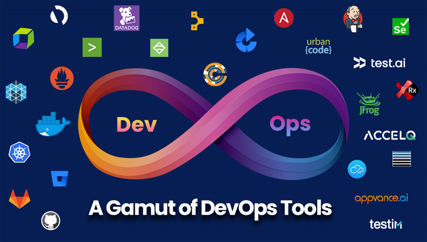

BackEnd Information
Web development activities that are done at the back end of programs are referred to as back end development. Back-end development covers server-side web application logic and integration and activities, like writing APIs,creating libraries, and working with system components instead of frontend development, which focuses on customer facing services and programs. Backend developers build code that allows a database and an application to communicate with one another. Backend developers take care and maintain the back-end of a website, including databases, servers, and apps, and they control what you don't see.

FrontEnd Information
A front-end developer creates websites and applications using web languages such as HTML, CSS, and JavaScript allow users to access and interact with the site or app. When you visit a website, the design elements you see were created by a front-end developer.Contrast this with back-end developers, who work to develop the behind-the-scenes portions of a website or application, like data storage, security, site performance, or other server-side functions. Front-end developers create the user interface (UI) that determines what each part of a site or application does and how it will look. If someone wanted to build a website, for example, they might hire a front-end developer to create the site's layout. The front-end developer determines where to place images, what the navigation should look like, and how to present the site. Much of their work involves ensuring the appearance and layout of the site or application is easy to navigate and intuitive for the user.
FullStack Information
A full stack developer is a developer or engineer who can tackle projects that involve databases, APIs, build user-facing websites, or even work with clients during the planning phase of projects.More developers are becoming what we call full stack developers. A lot of employers (especially agencies who work on different kinds of sites) are looking for developers who know how to work on all of the parts of a site, so they can use the best tools for the job regardless — hence the rise in companieslisting full stack development on job requirements.
Full stack developer skills:
- HTML, CSS, JavaScript, and one or more back end languages.
- Specialized in a particular programming language, like Ruby or PHP or Python, although full stack programmers, especially if they have been working as a developer for a while, work with more than one. In job listings, you will ll generally see openings for “full stack Ruby developer” or the like.
- Learned either project management, visual design, web design, or user experience skills — to complete their “stack,” if you will.

Devops Information
A DevOps engineer is an IT generalist who should have a wide-ranging knowledge of both development and operations, including coding, infrastructure management, system administration, and DevOps toolchains. DevOps engineers should also possess interpersonal skills since they work across company silos to create a more collaborative environment. DevOps engineers need to have a strong understanding of common system architecture, provisioning, and administration, but must also have experience with the traditional developer toolset and practices such as using source control, giving and receiving code reviews, writing unit tests, and familiarity with agile principles. The role of a DevOps engineer will vary from one organization to another, but invariably entails some combination of release engineering, infrastructure provisioning and management, system administration, security, and DevOps advocacy.
